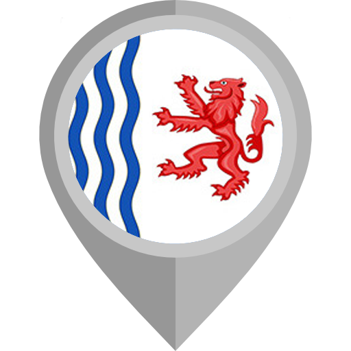

L’informatique est un secteur très demandé où les offres d’emploi sont fréquentes et parfois même, plus nombreuses que la demande !
La situation régionale (Nouvelle-Aquitaine) de l’emploi dans le secteur de l’informatique se porte globalement très bien : à l’image de celle de la France, l’offre ne manque pas et elle est variée. En effet, quelques minutes de recherches sur divers sites internet d’offres d’emplois suffisent à trouver des centaines voire des milliers d’annonces récentes de postes à pourvoir dans le domaine de l’informatique en région Nouvelle-Aquitaine.
Le secteur informatique détient le record absolu en termes de croissance de l’emploi (16 trimestres consécutifs de croissance, selon le Syntec Numérique). Paradoxalement, malgré le dynamisme du marché, le secteur de lʼinformatique fait face à des problèmes de recrutement, notamment en raison de la difficulté de trouver des personnes correspondant au profil demandé. Le chômage est quasi inexistant dans le secteur de l’informatique en raison de la transition des entreprises vers le numérique. En effet le secteur recrute à tour de bras avec de la création d’emploi en constante évolution. De nouveaux métiers voient même le jour comme récemment les data scientists (ceux qui analyse et traitent les données recueillies notamment par le biai des sites internet).
En effet, si le marché de l’emploi n’est pas bouché pour les demandeurs, on ne peut pas en dire autant pour les recruteurs. L’offre d’emploi est supérieure à la demande. En France par exemple, de nombreuses offres d’emploi en informatique restent constamment sans candidats parce que la France manque de personnes formées en informatique. Les entreprises qui en ont les moyens finissent par trouver le candidat idéal mais ce n’est pas sans difficulté.
Aux Etats-Unis, le secteur de l’informatique est encore plus développé qu’en France, non seulement il a pris une importance considérable mais de nouveaux métiers se créent régulièrement, notamment en lien avec les big data (analyse des données massives). Les emplois technologiques ne se développent pas simplement, ils montent en flèche. Ce secteur devrait augmenter de 13 % entre 2016 et 2026, selon le Bureau of Labor Statistics (BLS). Pour se faire une idée, cela représente plus de croissance que tous les autres secteurs, qui sont en moyennes de 7 %.
Pour faire simple, il faut savoir que le salaire moyen de ce secteur est plus 2 fois supérieur au salaire moyen aux Etats-unis (qui est pour rappel de 37,690 $). Les salaires atteignaient les 103,560$ par an pour les développeurs de logiciels en 2017. Toutefois, il est important de replacer ces informations dans leur contexte : en effet, travailler aux Etats-unis représente aussi des inconvénients, aux Etats-unis les protections sociales sont très faibles. Ces désavantages sociaux ne s’arrêtent pas là, dans la plupart des états des USA, il n’y a pas de sécurité sociale.
Le secteur de l’informatique semble être intéressant voir le plus intéressant, tant aux Etats-unis qu’en France, où l’offre est supérieur à la demande (surtout en France en raison du nombre trop faible de personnes formées). Avec une croissance extraordinaire qui n’est pas prête de s’arrêter et des salaires parmis les plus haut, l’informatique est un secteur d’avenir.